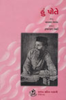
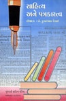
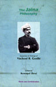

સંપાદન સાહિત્ય
શંખેશ્વર મહાતીર્થ (પ્ર.આ. ૧૯૩૬. છઠ્ઠી આ. ૧૯૮૩) ; નવભારતના ભાગ્યવિધાતા (૧૯૭૫) ; સાહિત્ય અને પત્રકારત્વ (૧૯૮૦) ; ઓજસ દીઠાં આત્મબળનાં (૧૯૮૩) ; નર્મદ : આજના સંદર્ભમાં (૧૯૮૩) ; જયભિખ્ખુની જૈન ધર્મકથાઓ ૧-૨ (૧૯૮૫) ; બાલસાહિત્ય સંગોષ્ઠિ (૧૯૮૫) ; ધન્ય છે ધર્મ તને (આચાર્ય વિજયવલ્લભંસૂરિનાં પ્રવચનોનું સંપાદન) (૧૯૮૭) ; હૈમ સ્મૃતિ (૧૯૮૯) ; ભગવાન મહાવીર (૧૯૯૦) ; યશોભારતી (૧૯૯૨) ; રત્નત્રયીનાં અજવાળાં (૧૯૯૭) ; એકવીસમી સદીનું બાળસાહિત્ય (૨૦૦૦) ; અદાવત વિનાની અદાલત (શ્રી ચં.ચી. મહેતાનાં રેડિયોરૂપકોનું સંપાદન) (૨૦૦૦) ; એક દિવસની મહારાણી (ડેમોન રનિયનની વાર્તાઓનો ચં.,ચી. મહેતાએ કરેલો અનુવાદ) (૨૦૦૦) ; હું પોતે (નારાયણ હેમચંદ્ર) (૨૦૦૧) ; સરદારની વાણી (ભાગ ૧ થી ૩) (૨૦૦૧) ; શ્રીમદ્ રાજચંદ્ર અને મહાત્મા ગાંધી (૨૦૦૩) ; નવલિકા અંક (ગુજરાત ટાઇમ્સ) ; સામાયિક સૂત્ર – અર્થ સાથે (સંપાદન) ; પરિવર્તનનું પ્રભાત (ગુજરાત ટાઇમ્સ) ; એકવીસમી સદીનું વિશ્વ (ગુજરાત ટાઇમ્સ) ; The Jaina Philosophy (2009) ; The Yoga Philosophy (2009) ; The Unknown Life of Jesus Christ (2009) સૂરિશતાબ્દિનું સંભારણું (2015) મહાવીર જૈન વિદ્યાલય શતાબ્દિ ગ્રંથ ભાગ 1-2, (2015) |
||
| સંપાદન (અન્ય સાથે) | ||
જયભિખ્ખુ સ્મૃતિગ્રંથ (1970) કવિ દુલા કાગ સ્મૃતિગ્રંથ (1979) શબ્દશ્રી (1980) સૌહાર્દ અને સહૃદયતા (2001) ચંદ્રવદન મહેતા નાટ્યશ્રેણી ભાગ 1 થી 5 (2002-2006) સવ્યસાચી સારસ્વત (2007) પ્રેરણાની પાવનમૂર્તિ (2013-2006), આત્મચૈતન્યની યાત્રા (2014) |
||
|  |
ગુજરાતી સાહિત્યની આ પ્રથમ પ્રકાશિત આત્મકથા છે. નારાયણ હેમચંદ્રના જન્મથી માંડીને વિલાયત ગયા ત્યાં સુધીની હકીકત એમાં છે. આ પુસ્તકમાં તેમનાં પરિચયમાં આવેલી વ્યક્તિઓના ચરિત્રો વિશે પણ જાણવા મળે છે.લેખકના આંતરવ્યક્તિત્વને બદલે એમના બાહ્યવ્યક્તિત્વનો વિશેષ પરિચય મળે છે. ગ્રંથના ‘સંપાદકીય’માં નારાયણ હેમચંદ્રના વ્યક્તિત્વનો અને તેમણે રચેલા ગ્રંથોની વિશેષતાઓ આલેખાઈ છે. |
|
|  |
પત્રકારત્વ વિષયક પરિસંવાદમાં યોજાયેલાં વ્યાખ્યાનોનો સંચય છે.આ પુસ્તકમાં ગુજરાતી પત્રકારત્વનો ઈતિહાસ, સાહિત્ય અને પત્રકારત્વ વચ્ચેનો સંબંધ અને અખબારના આર્થિક પાસા જેવા વિષયો ઉપર વિદ્વાનોએ આપેલાં વ્યાખ્યાનોનો સંગ્રહ કરવામાં આવ્યો છે. આ પુસ્તક પત્રકારત્વનો અભ્યાસ કરતા વિદ્યાર્થીઓ અને સંશોધકોને ઉપયોગી બની રહે તેવું છે. |
|
|  |
1893માં વિશ્વધર્મ પરિષદમાં જૈન ધર્મના પ્રતિનિધિ તરીકે ઉપસ્થિત રહેલા વીરચંદ રાઘવજી ગાંધીની સર્વતોમુખી પ્રતિભાનો પરિચય એમેરિકા અને ઇંગ્લૅન્ડમાં આપેલાં પ્રવચનોમાંથી પ્રાપ્ત થાય છે. માત્ર જૈન દર્શન જ નહીં બલ્કે વેદાંત, વૈશેષિક અને સાંખ્ય જેવા દર્શનો પર વક્તવ્ય આપવા ઉપરાંત શ્વાસનું વિજ્ઞાન, ખોરાકની કલા, જેવા વિષયો પર એમણે વાત કરી છે. જૈન તત્ત્વજ્ઞાનને એનાથી પૂર્ણરૂપે અપરિચિત એવા શ્રોતાઓને અંગ્રેજી ભાષામાં સરળ રીતે સમજાવે છે. ખ્રિસ્તી મિશનરીઓની વટાળપ્રવૃત્તિની ટીકા કરીને તેઓ કહે છે કે આપણે સહુએ માનવીય આત્માની સુખાકારી માટે પ્રયત્ન કરવો જોઈએ. |
|
ડૉ. કુમારપાળ દેસાઈ એક આર્ષદ્રષ્ટા ઋષિ તરીકેની પ્રતીતિ કરાવે છે. ‘ગુજરાત ટાઇમ્સ’ને એના વિશિષ્ટ અંકો માટે કુમારપાળ દેસાઈની ઉત્કૃષ્ટ સાહિત્યરુચિ, વર્તમાન વિશ્વ સાથેનો અનુબંધ અને ઉત્તમ લેખકો પાસેથી લેખો મેળવવાની ક્ષમતાનો લાભ મળ્યો છે. પરિણામે આજે પણ આ વિશેષાંકો પત્રકારત્વ જગતમાં આગવી ભાત પાડી રહ્યા છે. |